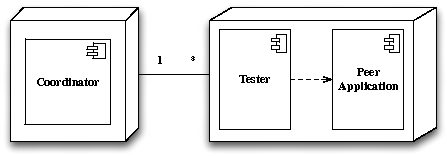
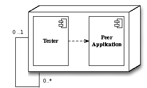

| The
peerunit architectures ___________________________________________________________________________________________________ Centralized architecture Distributed architecture ___________________________________________________________________________________________________ Centralized architecture The centralized architecture has two main components, the tester and the coordinator. The role of the tester is to execute test case actions and to control the volatility of a single peer. The role of the coordinator is to dispatch the actions of a test case through the testers and to maintain a list of unavailable peers. The UML diagram presented in the figure illustrates the deployment of the architecture: one coordinator controls several testers and each tester runs on a different logical node (the same as the peer it controls).  The tester provides two interfaces, for action execution and volatility control:
The coordinator provides three different interfaces, for action execution, volatility and test case variables:
Distributed architecture The distributed architecture has a main component, the tester. The role of the tester is to execute test case actions and control the volatility of a single peer. Moreover, it coordinates the dispatch of the test case actions through distributed testers arranged in a B-Tree manner. The UML diagram presented in the figure below illustrates the deployment of the framework: each tester runs on a logical node (the same as the peer it controls). Yet, a node may have several testers depending on the order of the tree.  The tester provides four interfaces that can be used whenever writing test cases. They are for action execution management, volatility control and test case variables:
home _______________________________________________________________________________________________ |